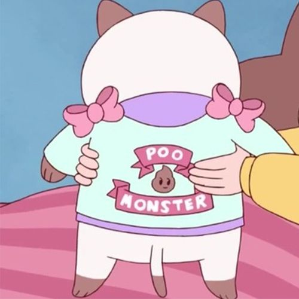

PuppyCat
Le nom de Puppycat a été trouvé par Bee et est dû à son doute quant à la véritable espèce de Puppycat. D'après elle, il ressemblerait plus ou moins à un chat mais aurait une odeur de chien (il pue). Ce compagnon mystérieux est tombé du ciel devant Bee et à une voix (il est doublé par le vocaloid Oliver!) et un langage assez spécial que seul Bee comprend. En effet, on apprend au fil de la série que PuppyCat est en fait le guardien de Bee et qu'il fût ami avec le père de celle-ci. Il est également le fameux 'hors la loi de l'espace' ou 'space outlaw' en anglais.
The Space Outlaw
Ceci est la véritable forme de PuppyCat qui est en fait une sorte d'extraterrestre. Malheureusement l'histoire du hors la loi de l'espace est quelque peu tragique. En effet PuppyCat a cette apparence d'hybride chat/chien à cause d'un sort dont il a été victime précedemment.
"Once upon a time, there was a Space Outlaw who fell in love with the Space King's daughter." Notre bandit de l'espace tomba amoureux de la princesse de l'espace et cet amour s'avera réciproque en apparrence, cependant lorsque notre héro demanda à la princesse de s'enfuir à ses cotés, celle-ci accepta dans un premier temps puis lui tendit un piège. Cet amour fut donc stoppé et interdit. Le Sace Outlaw fut ensuite transformé en PuppyCat en tant que punition.
Pour conclure, PuppyCat est un personnage reconnu pour être très drôle. En effet il est souvent grincheux, traite les gens avec condescendance et utilise du langage familier (il n'hésite pas à insulter les amis de Bee). Cela contraste avec son apparence toute mignonne de chat.